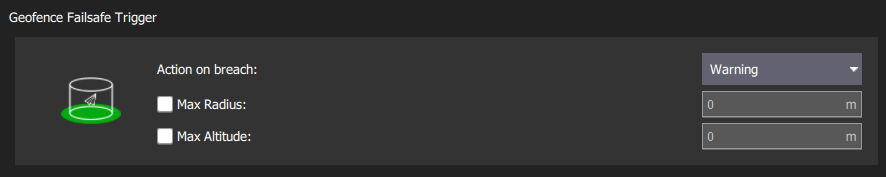

安全保护¶
PX4 has a number of safety features to protect and recover your vehicle if something goes wrong:
- Failsafes allow you to specify areas and conditions under which you can safely fly, and the action that will be performed if a failsafe is triggered (for example, landing, holding position, or returning to a specified point). The most important failsafe settings are configured in the QGroundControl Safety Setup page. Others must be configured via parameters.
- Safety switches on the remote control can be used to immediately stop motors or return the vehicle in the event of a problem.
Failsafe Actions¶
When a failsafe is triggered, the default behavior (for most failsafes) is to enter Hold for COM_FAIL_ACT_T seconds before performing an associated failsafe action. This gives the user time to notice what is happening and override the failsafe if needed. In most cases this can be done by using RC or a GCS to switch modes (note that during the failsafe-hold, moving the RC sticks does not trigger an override).
The list below shows the set of all failsafe actions, ordered in increasing severity. Note that different types of failsafe may not support all of these actions.
| Action | Description |
|---|---|
| None/Disabled | No action. The failsafe will be ignored. |
| Warning | A warning message will be sent (i.e. to QGroundControl). |
| Hold mode | The vehicle will enter Hold mode (MC) or Hold mode (FW) and hover or circle, respectively. VTOL vehicles will hold according to their current mode (MC/FW). |
| Return mode | The vehicle will enter Return mode. Return behaviour can be set in the Return Home Settings (below). |
| Land mode | The vehicle will enter Land mode (MC) or Land mode (FW), and land. A VTOL will first transition to MC mode. |
| Disarm | Stops the motors immediately. |
| Flight termination | Turns off all controllers and sets all PWM outputs to their failsafe values (e.g. PWM_MAIN_FAILn, PWM_AUX_FAILn). The failsafe outputs can be used to deploy a parachute, landing gear or perform another operation. For a fixed-wing vehicle this might allow you to glide the vehicle to safety. |
If multiple failsafes are triggered, the more severe action is taken. For example if both RC and GPS are lost, and manual control loss is set to Return mode and GCS link loss to Land, Land is executed.
:::tip The exact behavior when different failsafes are triggered can be tested with the Failsafe State Machine Simulation. :::
QGroundControl Safety Setup¶
The QGroundControl Safety Setup page is accessed by clicking the QGroundControl icon, Vehicle Setup, and then Safety in the sidebar). This includes the most important failsafe settings (battery, RC loss etc.) and the settings for the triggered actions Return and Land.

Low Battery Failsafe¶
The low battery failsafe is triggered when the battery capacity drops below one (or more warning) level values.

The most common configuration is to set the values and action as above (with Warn > Failsafe > Emergency).
With this configuration the failsafe will trigger warning, then return, and finally landing if capacity drops below the respective levels.
It is also possible to set the Failsafe Action to warn, return, or land when the Battery Failsafe Level failsafe level is reached.
The settings and underlying parameters are shown below.
| Setting | Parameter | Description |
|---|---|---|
| Failsafe Action | COM_LOW_BAT_ACT | Warn, Return, or Land based when capacity drops below Battery Failsafe Level, OR Warn, then return, then land based on each of the level settings below. |
| Battery Warn Level | BAT_LOW_THR | Percentage capacity for warnings (or other actions). |
| Battery Failsafe Level | BAT_CRIT_THR | Percentage capacity for Return action (or other actions if a single action selected). |
| Battery Emergency Level | BAT_EMERGEN_THR | Percentage capacity for triggering Land (immediately) action. |
Manual Control Loss failsafe¶
The manual control loss failsafe may be triggered if the connection to the RC transmitter or joystick is lost, and there is no fallback. If using an RC transmitter this is triggered if the RC transmitter link is lost. If using joysticks connected over a MAVLink data link, this is triggered if the joysticks are disconnected or the data link is lost.
::: info PX4 and the receiver may also need to be configured in order to detect RC loss: Radio Setup > RC Loss Detection. :::

The QGCroundControl Safety UI allows you to set the failsafe action and RC Loss timeout. Users that want to disable the RC loss failsafe in specific automatic modes (mission, hold, offboard) can do so using the parameter COM_RCL_EXCEPT.
Additional (and underlying) parameter settings are shown below.
| Parameter | Setting | Description |
|---|---|---|
| COM_RC_LOSS_T | Manual Control Loss Timeout | Time after last setpoint received from the selected manual control source after which manual control is considered lost. This must be kept short because the vehicle will continue to fly using the old manual control setpoint until the timeout triggers. |
| COM_FAIL_ACT_T | Failsafe Reaction Delay | Delay in seconds between failsafe condition being triggered (COM_RC_LOSS_T) and failsafe action (RTL, Land, Hold). In this state the vehicle waits in hold mode for the manual control source to reconnect. This might be set longer for long-range flights so that intermittent connection loss doesn't immediately invoke the failsafe. It can be to zero so that the failsafe triggers immediately. |
| NAV_RCL_ACT | Failsafe Action | Disabled, Loiter, Return, Land, Disarm, Terminate. |
| COM_RCL_EXCEPT | RC Loss Exceptions | Set the modes in which manual control loss is ignored: Mission, Hold, Offboard. |
Data Link Loss Failsafe¶
The Data Link Loss failsafe is triggered if a telemetry link (connection to ground station) is lost.

The settings and underlying parameters are shown below.
| Setting | Parameter | Description |
|---|---|---|
| Data Link Loss Timeout | COM_DL_LOSS_T | Amount of time after losing the data connection before the failsafe will trigger. |
| Failsafe Action | NAV_DLL_ACT | Disabled, Hold mode, Return mode, Land mode, Disarm, Terminate. |
Geofence Failsafe¶
The Geofence Failsafe is triggered when the drone breaches a "virtual" perimeter. In its simplest form, the perimeter is set up as a cylinder centered around the home position. If the vehicle moves outside the radius or above the altitude the specified Failsafe Action will trigger.

:::tip PX4 separately supports more complicated Geofence geometries with multiple arbitrary polygonal and circular inclusion and exclusion areas: Flying > Geofence. :::
The settings and underlying geofence parameters are shown below.
| Setting | Parameter | Description |
|---|---|---|
| Action on breach | GF_ACTION | None, Warning, Hold mode, Return mode, Terminate, Land. |
| Max Radius | GF_MAX_HOR_DIST | Horizontal radius of geofence cylinder. Geofence disabled if 0. |
| Max Altitude | GF_MAX_VER_DIST | Height of geofence cylinder. Geofence disabled if 0. |
::: info
Setting GF_ACTION to terminate will kill the vehicle on violation of the fence.
Due to the inherent danger of this, this function is disabled using CBRK_FLIGHTTERM, which needs to be reset to 0 to really shut down the system.
:::
The following settings also apply, but are not displayed in the QGC UI.
| Setting | Parameter | Description |
|---|---|---|
| Geofence source | GF_SOURCE | Set whether position source is estimated global position or direct from the GPS device. |
| Preemptive geofence triggering | GF_PREDICT | (Experimental) Trigger geofence if current motion of the vehicle is predicted to trigger the breach (rather than late triggering after the breach). |
| Circuit breaker for flight termination | CBRK_FLIGHTTERM | Enables/Disables flight termination action (disabled by default). |
Return Mode Settings¶
Return is a common failsafe action that engages Return mode to return the vehicle to the home position. This section shows how to set the land/loiter behaviour after returning.

The settings and underlying parameters are shown below:
| Setting | Parameter | Description |
|---|---|---|
| Climb to altitude | RTL_RETURN_ALT | Vehicle ascend to this minimum height (if below it) for the return flight. |
| Return behaviour | Choice list of Return then: Land, Loiter and do not land, or Loiter and land after a specified time. | |
| Loiter Altitude | RTL_DESCEND_ALT | If return with loiter is selected you can also specify the altitude at which the vehicle hold. |
| Loiter Time | RTL_LAND_DELAY | If return with loiter then land is selected you can also specify how long the vehicle will hold. |
::: info The return behaviour is defined by RTL_LAND_DELAY. If negative the vehicle will land immediately. Additional information can be found in Return mode. :::
Land Mode Settings¶
Land at the current position is a common failsafe action (in particular for multicopters), that engages Land Mode. This section shows how to control when and if the vehicle automatically disarms after landing. For Multicopters (only) you can additionally set the descent rate.

The settings and underlying parameters are shown below:
| Setting | Parameter | Description |
|---|---|---|
| Disarm After | COM_DISARM_LAND | Select checkbox to specify that the vehicle will disarm after landing. The value must be non-zero but can be a fraction of a second. |
| Landing Descent Rate (MC only) | MPC_LAND_SPEED | Rate of descent. |
Other Failsafe Settings¶
This section contains information about failsafe settings that cannot be configured through the QGroundControl Safety Setup page.
Position (GPS) Loss Failsafe¶
The Position Loss Failsafe is triggered if the quality of the PX4 position estimate falls below acceptable levels (this might be caused by GPS loss) while in a mode that requires an acceptable position estimate.
The failure action is controlled by COM_POSCTL_NAVL, based on whether RC control is assumed to be available (and altitude information):
0: Remote control available. Switch to Altitude mode if a height estimate is available, otherwise Stabilized mode.1: Remote control not available. Switch to Descend mode if a height estimate is available, otherwise enter flight termination. Descend mode is a landing mode that does not require a position estimate.
Fixed-wing vehicles and VTOLs in fixed-wing flight additionally have a parameter (FW_GPSF_LT) that defines how long they will loiter (circle with a constant roll angle (FW_GPSF_R) at the current altitude) after losing position before attempting to land. If VTOLs have are configured to switch to hover for landing (NAV_FORCE_VT) then they will first transition and then descend.
The relevant parameters for all vehicles shown below.
| Parameter | Description |
|---|---|
| COM_POS_FS_DELAY | Delay after loss of position before the failsafe is triggered. |
| COM_POSCTL_NAVL | Position control navigation loss response during mission. Values: 0 - assume use of RC, 1 - Assume no RC. |
Parameters that only affect Fixed-wing vehicles:
| Parameter | Description |
|---|---|
| FW_GPSF_LT | Loiter time (waiting for GPS recovery before it goes into land or flight termination). Set to 0 to disable. |
| FW_GPSF_R | Fixed roll/bank angle while circling. |
Offboard Loss Failsafe¶
The Offboard Loss Failsafe is triggered if the offboard link is lost while under Offboard control. Different failsafe behaviour can be specified based on whether or not there is also an RC connection available.
The relevant parameters are shown below:
| Parameter | Description |
|---|---|
| COM_OF_LOSS_T | Delay after loss of offboard connection before the failsafe is triggered. |
| COM_OBL_RC_ACT | Failsafe action if RC is available: Position mode, Altitude mode, Manual mode, Return mode, Land mode, Hold mode. |
Mission Feasibility Checks¶
A number of checks are run to ensure that a mission can only be started if it is feasible. For example, the checks ensures that the first waypoint isn't too far away, and that the mission flight path doesn't conflict with any geofences.
As these are not strictly speaking "failsafes" they are documented in Mission Mode (FW) > Mission Feasibility Checks and Mission Mode (MC) > Mission Feasibility Checks.
Traffic Avoidance Failsafe¶
The Traffic Avoidance Failsafe allows PX4 to respond to transponder data (e.g. from ADSB transponders) during missions.
The relevant parameters are shown below:
| Parameter | Description |
|---|---|
| NAV_TRAFF_AVOID | Set the failsafe action: Disabled, Warn, Return mode, Land mode. |
Quad-chute Failsafe¶
Failsafe for when a VTOL vehicle can no longer fly in fixed-wing mode, perhaps due to the failure of a pusher motor, airspeed sensor, or control surface. If the failsafe is triggered, the vehicle will immediately switch to multicopter mode and execute the action defined in parameter COM_QC_ACT.
::: info
The quad-chute can also be triggered by sending a MAVLINK MAV_CMD_DO_VTOL_TRANSITION message with param2 set to 1.
:::
The parameters that control when the quad-chute will trigger are listed in the table below.
| Parameter | Description |
|---|---|
| COM_QC_ACT | Quad-chute action after switching to multicopter flight. Can be set to: Warning, Return, Land, Hold. |
| VT_FW_QC_HMAX | Maximum quad-chute height, below which the quad-chute failsafe cannot trigger. This prevents high altitude quad-chute descent, which can drain the battery (and itself cause a crash). The height is relative to ground, home, or the local origin (in preference order, depending on what is available). |
| VT_QC_ALT_LOSS | Uncommanded descent quad-chute altitude threshold. In altitude controlled modes, such as Hold mode, Position mode, Altitude mode, or Mission mode, a vehicle should track its current "commanded" altitude setpoint. The quad chute failsafe is triggered if the vehicle falls too far below the commanded setpoint (by the amount defined in this parameter). Note that the quad-chute is only triggered if the vehicle continuously loses altitude below the commanded setpoint; it is not triggered if the commanded altitude setpoint increases faster than the vehicle can follow. |
| VT_QC_T_ALT_LOSS | Altitude loss threshold for quad-chute triggering during VTOL transition to fixed-wing flight. The quad-chute is triggered if the vehicle falls this far below its initial altitude before completing the transition. |
| VT_FW_MIN_ALT | Minimum altitude above Home for fixed-wing flight. When the altitude drops below this value in fixed-wing flight the vehicle a quad-chute is triggered. |
| VT_FW_QC_R | Absolute roll threshold for quad-chute triggering in FW mode. |
| VT_FW_QC_P | Absolute pitch threshold for quad-chute triggering in FW mode. |
Failure Detector¶
The failure detector allows a vehicle to take protective action(s) if it unexpectedly flips, or if it is notified by an external failure detection system.
During flight, the failure detector can be used to trigger flight termination if failure conditions are met, which may then launch a parachute or perform some other action.
::: info Failure detection during flight is deactivated by default (enable by setting the parameter: CBRK_FLIGHTTERM=0). :::
During takeoff the failure detector attitude trigger invokes the disarm action if the vehicle flips (disarm kills the motors but, unlike flight termination, will not launch a parachute or perform other failure actions).
Note that this check is always enabled on takeoff, irrespective of the CBRK_FLIGHTTERM parameter.
The failure detector is active in all vehicle types and modes, except for those where the vehicle is expected to do flips (i.e. Acro mode (MC), Acro mode (FW), and Manual (FW)).
Attitude Trigger¶
The failure detector can be configured to trigger if the vehicle attitude exceeds predefined pitch and roll values for longer than a specified time.
The relevant parameters are shown below:
| Parameter | Description |
|---|---|
| CBRK_FLIGHTTERM | Flight termination circuit breaker. Unset from 121212 (default) to enable flight termination due to FailureDetector or FMU loss. |
| FD_FAIL_P | Maximum allowed pitch (in degrees). |
| FD_FAIL_R | Maximum allowed roll (in degrees). |
| FD_FAIL_P_TTRI | Time to exceed FD_FAIL_P for failure detection (default 0.3s). |
| FD_FAIL_R_TTRI | Time to exceed FD_FAIL_R for failure detection (default 0.3s). |
External Automatic Trigger System (ATS)¶
The failure detector, if enabled, can also be triggered by an external ATS system. The external trigger system must be connected to flight controller port AUX5 (or MAIN5 on boards that do not have AUX ports), and is configured using the parameters below.
::: info External ATS is required by ASTM F3322-18. One example of an ATS device is the FruityChutes Sentinel Automatic Trigger System. :::
| Parameter | Description |
|---|---|
| FD_EXT_ATS_EN | Enable PWM input on AUX5 or MAIN5 (depending on board) for engaging failsafe from an external automatic trigger system (ATS). Default: Disabled. |
| FD_EXT_ATS_TRIG | The PWM threshold from external automatic trigger system for engaging failsafe. Default: 1900 ms. |
Emergency Switches¶
Remote control switches can be configured (as part of QGroundControl Flight Mode Setup) to allow you to take rapid corrective action in the event of a problem or emergency; for example, to stop all motors, or activate Return mode.
This section lists the available emergency switches.
Kill Switch¶
A kill switch immediately stops all motor outputs (and if flying, the vehicle will start to fall)! The motors will restart if the switch is reverted within 5 seconds. After 5 seconds the vehicle will automatically disarm; you will need to arm it again in order to start the motors.
Arm/Disarm Switch¶
The arm/disarm switch is a direct replacement for the default stick-based arming/disarming mechanism (and serves the same purpose: making sure there is an intentional step involved before the motors start/stop). It might be used in preference to the default mechanism because:
- Of a preference of a switch over a stick motion.
- It avoids accidentally triggering arming/disarming in-air with a certain stick motion.
- There is no delay (it reacts immediately).
The arm/disarm switch immediately disarms (stop) motors for those flight modes that support disarming in flight. This includes:
- Manual mode
- Acro mode
- Stabilized
For modes that do not support disarming in flight, the switch is ignored during flight, but may be used after landing is detected. This includes Position mode and autonomous modes (e.g. Mission, Land etc.).
::: info Auto disarm timeouts (e.g. via COM_DISARM_LAND) are independent of the arm/disarm switch - ie even if the switch is armed the timeouts will still work. :::
Return Switch¶
A return switch can be used to immediately engage Return mode.
Other Safety Settings¶
Auto-disarming Timeouts¶
You can set timeouts to automatically disarm a vehicle if it is too slow to takeoff, and/or after landing (disarming the vehicle removes power to the motors, so the propellers won't spin).
The relevant parameters are shown below:
| Parameter | Description |
|---|---|
| COM_DISARM_LAND | Timeout for auto-disarm after landing. |
| COM_DISARM_PRFLT | Timeout for auto disarm if vehicle is too slow to takeoff. |